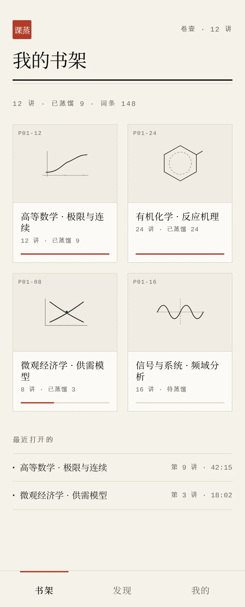
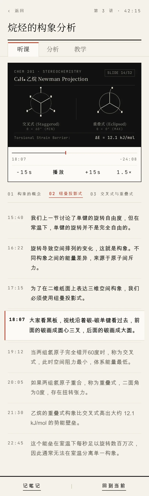
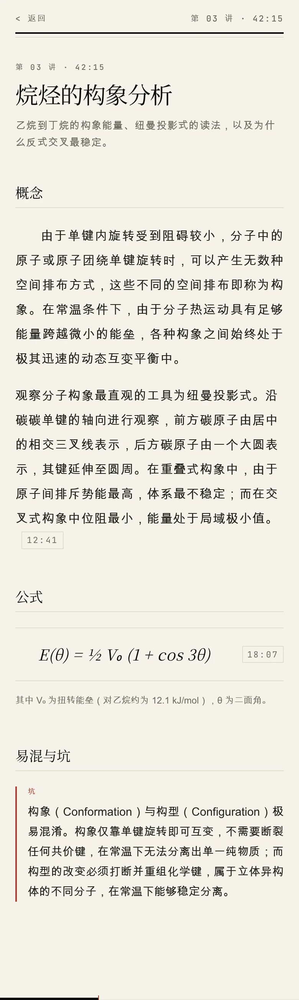
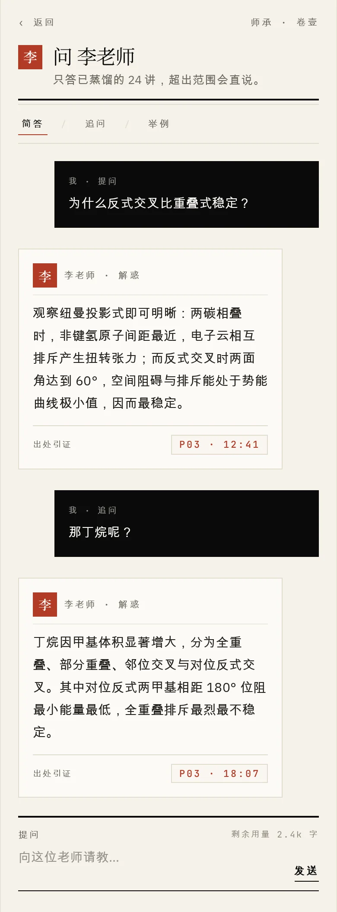

视频是流。
看完就散了。
一门网课几十个小时。看完一遍，想回头找当时那句关键的话，只能在进度条上来回拖；想把两讲里的同一个概念放在一起看，只能再开一个窗口。
课蒸馏换个方向：先把这门课有多少讲列清楚，你选要哪些讲，然后每一讲摊成六栏——概念、公式、推导、例题、易混与坑、考点。术语单独收成词条，全课连成大纲。
它不替你听课。课还是你自己听，它负责把听过的东西留下来。
贴一个链接，到一份讲义
-
收进书架
贴 B 站课程链接或 BV 号，先把这门课有多少讲列清楚。从 B 站分享进来的链接直接认。
-
选讲次
你决定蒸馏哪些讲，没选的不会动。开始前先给出本次用量。
-
取文字
优先取课程自带的字幕；没有字幕的讲次才需要转写。音频转写完即删，只留下派生出来的文字。
-
校词条
术语按词条表统一，同一个概念全课一个写法，不出现同义异名。
-
结构化
每一讲摊成六栏，每条带一个时间锚点，能点回视频里的对应位置。
-
大纲与词条
全课连成一份大纲，术语收成一张词条表。
-
师承
可选。从讲师的说法里提炼出方法，之后可以向它提问。
-
交付自检
出一份自检报告，说清哪些讲次缺了什么，不假装完整。
一讲，摊成六栏
- 概念
- 这一讲立了哪几个说法，各自的定义与边界。
- 公式
- 出现的式子，以及每个符号指的是什么。
- 推导
- 从哪一步到哪一步，中间跳过了什么。
- 例题
- 讲师当场算过的题，连着他讲的解法一起留下。
- 易混与坑
- 他提醒过的地方，以及容易和哪个概念混。
- 考点
- 他说「这里会考」的那几句，单独拎出来。
六栏是固定的。哪一栏这一讲里没有，就空着——不硬凑，也不拿别的内容填。
界面是纸墨的
宣纸为底、焦墨写字、朱砂钤印。分区靠纸色深浅与细线，不靠卡片、阴影和圆角；状态写成文字，不用红黄绿。下面是几屏的实际样子。




这几张是界面的渲染稿，不是真机截屏；版式与用词以 App 里的实际界面为准。
功能
听课
- 站内播放
- 不用跳去别的应用。只取公开内容，不落盘、不转发。
- 转写同步
- 转写跟着播放位置走，当前那一句左侧压一条朱砂竖线。高亮不只靠颜色。
分析
- 六栏聚合
- 把全课的六栏并到一起看：所有公式、所有易混与坑，按讲次筛。
- 检索与自检
- 全课搜索，命中的句子带你回那一讲；另有一份交付自检报告。
教学
- 讲义 · 大纲 · 词条
- 三种读法：整篇读、看结构、查术语。同一个知识库，换一个切面。
- 导出
- 导出 Markdown 或 ZIP，只含讲义、大纲、词条与师承，不含音视频与字幕。
师承
- 问老师
- 回答是流式的，一句一句出来；每条都标出是原话、归纳还是推断。
- 方法
- 可选。换到「方法」看它按讲师的哪条路子回答。
另有：封面书墙的书架 · 增量更新（加新讲只处理新增的） · 深色模式
只做个人学习的文字化。
这不是一句免责声明，是它明确不做的事。下面每一条都能对着它自己的行为核对。
-
不下载
不落盘，不转发
站内播放只取公开内容，不把视频或音频存下来，也不提供音视频与字幕的下载。
-
不分发
只做你自己的那份
不重新分发视频、音频、字幕与课件，不绕过付费墙或 DRM，不批量爬取。
-
转写
要你点头
课程自带字幕的讲次不走转写。没有字幕时，音频会交给第三方转写服务，这一步由你确认后才开始。
-
凭据
只在服务端
App 里没有任何服务商凭据，也不需要你配置。所有取用都由服务端代理。
-
可以自由用的
你生成的那部分
蒸馏出来的讲义、大纲、词条与师承可以自由使用；原始的字幕、音视频与课件不可以。
下载
- 版本
- 0.1.0
- 文件大小
- 15.5 MB
- 系统要求
- Android 8.0 及以上
- 构建类型
- debug 内测
- SHA-256
3fa03047499e4ea80eb10db64dbedc836bf8369d28c4383bd02276a006a8ed0a